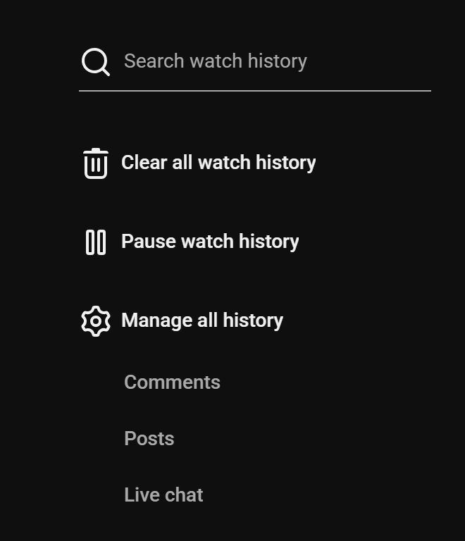
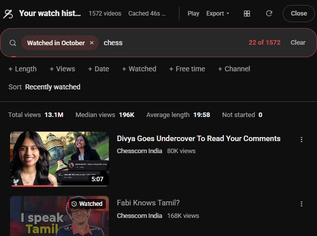

Guide 02·Watch history
How to find a YouTube video you watched but can't remember.
Updated 17 November 2026
Short answer
Start at youtube.com/feed/history and type any word you remember into Search watch history. If no word comes to mind, go by what you do remember. Google's My Activity can narrow your history to a date and shows what you searched. Needle filters it by channel, length and the month you watched it, right on YouTube.
01·On YouTube
Start on the History page
Open youtube.com/feed/history, or History in YouTube's menu. Checked on 17 November 2026, this is what sits beside the list:

- Search watch history finds videos by the words in them. Any word you remember is worth a try.
- Chips across the top split it into Videos, Shorts, Podcasts and Music.
- Comments lists what you've commented, each with the video it was on. If you left a comment, that's a way back.
What it can't do is the rest of what people remember: the channel's name without a word from the title, the month, the length.
02·What you remember
Go by what you remember
- A word, or part of the title. The History page's search box. Needle's search bar also shows matches under You watched as you type, near spellings included.
- The channel.
in:history @namein YouTube's search bar, with Needle, lists everything you watched from that channel. Or open the channel and look through its Videos tab. - Roughly when. Google's My Activity has Filter by date. With Needle,
watched:august-2025,watched:2025orwatched:last-month. - What you searched for. My Activity lists your YouTube searches in among what you watched; the video just above a search is usually the one you clicked.
- How long it was.
in:history >1hor<5m, with Needle. - You didn't finish it.
in:history is:startedlists what you started and left. - You liked it, or saved it. Then it's also in Liked videos or Watch Later, which are easier to search than history.
Two of these together usually leave a handful: a channel and a month, a length and a word.
03·With Needle
With Needle
- Open your History page and press the needle button in the bottom right corner, or Alt+Y.
- It reads the first page of your history. Press Read all to read on, as far as your Video limit.
- Type what you remember: a word,
@channel,watched:october,<20m, in any mix.

From any page, the same filters work in YouTube's search bar after in:history. Searching your watch history has every way in, and every filter is listed there too.
04·Years back
From years ago
For a video from a few years back, download your history from Google Takeout: tick only YouTube, then only history. Open watch-history.html from the download and press Ctrl+F. Every video is in it with its channel and the date and time you watched it, back to when your history starts. The full steps.
05·Missing videos
If it isn't in your history
History that was paused, or removed by auto-delete, can't be brought back, and a deleted video drops out of it. But the video may still be on YouTube. Search for what it was about, and narrow by what you remember: @channel if you know whose it was, before:2021 if it's older than that, >20m if it was long. Why a video goes missing from history.
06·Questions
Questions?
How do I find a YouTube video I watched a long time ago?
Search your watch history for a word from the title or the channel. If that finds nothing, narrow it by when you watched it: Google's My Activity filters your history by date, and for years back, a Google Takeout download of your history can be searched all at once.
How do I find a YouTube video I forgot the name of?
Go by what you remember about it instead: the channel, roughly when you watched it, what you searched for, how long it was, whether you finished it. Each one narrows your history on its own, and two of them together usually leave a handful.
Can I search my YouTube history by date?
Not on the History page itself. It lists videos under Today, Yesterday and the days before, but has no date filter. Google's My Activity has one, and Needle takes a month or a year: watched:august-2025, watched:2025.
Can I see what I searched for on YouTube?
Yes, in Google's My Activity, where your YouTube searches are listed in among what you watched. The video you clicked after a search is usually the entry just above it.
Can I find a Short I watched?
Yes. The History page has a Shorts chip at the top, which lists only the Shorts you've watched, and the search box works on them too.
How far back does YouTube keep my history?
As far as your account goes, unless auto-delete is on. Accounts made since mid-2020 start with history older than 36 months deleted automatically. Manage all history on the History page shows your setting.
Why isn't the video in my history at all?
Watch history was paused when you watched it, auto-delete removed it, you were on a different account or signed out, or the video has since been deleted or made private.
How far back does Needle look?
It reads your most recent history first, and Read all goes on as far as the Video limit in Needle's settings: 1,800 videos by default, up to 10,000. For something from years ago, a Takeout download is the surer way.
Is it free?
Yes. No account, no trial, no paid tier.